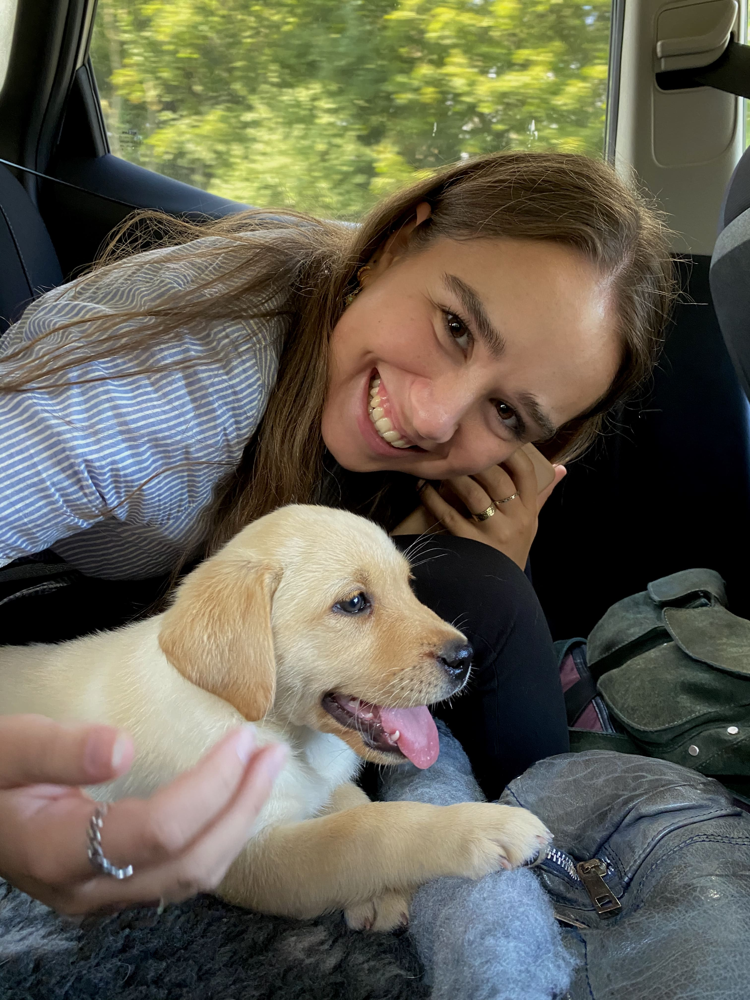
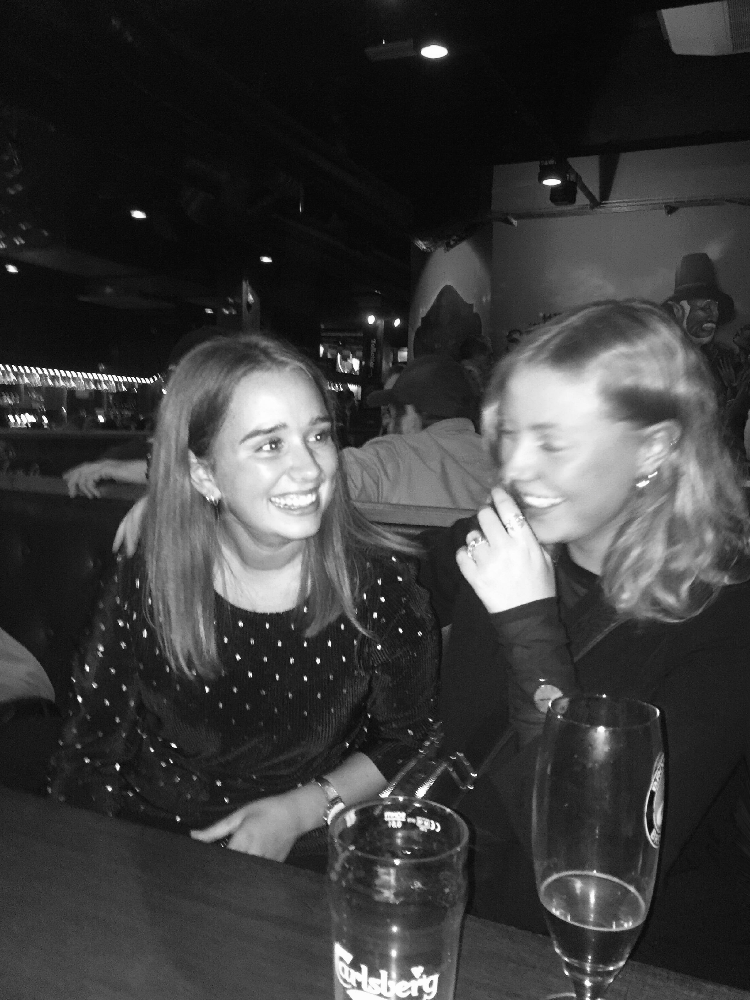

Mit navn er Maja Juhl Enevoldsen, jeg er 23 år og bor i Odense. Jeg har altid godt kunne lide at tage billeder og være kreativ i en eller anden form, og så har jeg altid lagt meget mærke til æstetik og design i mine omgivelser.
Computere og kodning har altid haft min interesse, og jeg elsker at sidde og nørde med ting og lave det præcis som den ide jeg har.
Som uddannet multimediedesigner rammer mine kompetencer bredt, da jeg samtidig med at have en god forståelse for det grafiske, og selve processen i det, også kan føre ideerne længere ud ved hjælp af HTML og CSS.
Om mig


